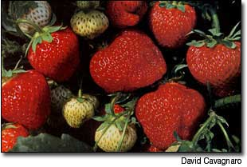
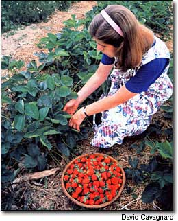
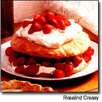

There's no denying the lure of sun ripened strawberries oozing with sweetness and flavor. Just catching a glimpse of a rich, red berry is enough to arouse one's appetite, and if appearances alone guaranteed good eating, strawberries certainly would win an epicurean gold medal every time.
Unless you live near a retail strawberry grower, growing your own is the only way to get that splendid strawberry flavor so lacking in supermarket crops. Truly ripe, tender, juicy strawberries are just too perishable to be found on any supermarket shelf; commercially grown strawberries are bred for firmness, size and long shelf life - flavor is secondary. In addition, they often are harvested before the berries even turn red, a practice that halts the development of the berries' flavor, but not their luscious color.
Growing your own strawberries is also one of the easiest and mast rewarding gar dening efforts you can undertake. These modest herbaceous plants need only a small amount of space in which to grow, and they produce large yields quickly. Right now is the ideal time to make plans for growing your own, so here are some considerations that will help you succeed:
TYPES OF STRAWBERRIES
Perennial garden strawberries come in three main types, defined by when they bear their fruit, according to Barbara L. Bowling, author of The Berry Grower's Companion (available on MOTHER'S Bookshelf, Page 118) and formerly a professor of horticulture at Rutgers and Pennsylvania State universities. They are: June-bearers (also called short-days), day-neutrals and ever-bearers.
June-bearers, available as early, mid and late-season varieties, are the most widely grown by home gardeners, accord ing to Bowling. As their name implies, they produce their crop in June. Day-neutrals, which are gaining popularity, bear a modest crop along with the June-bearers and then continue to produce fruits into the fall. "They initiate flower buds regardless of day length, thus producing some fruit throughout the summer and a sizable fall crop that is a great bonus for backyard growers," Bowling says. Day-neutrals, though, generally do not thrive in areas that have hot summers (upstate New York summers, for example, are ideal). Ever-bearers, which sometimes are confused with day-neutrals, bear from early summer into fall but are less productive and have lower-quality berries than the day-neutrals. Nevertheless, their ongoing harvests have appealed to many gardeners over the years.
You can harvest berries from day-neutral and ever-bearer strawberries the first year; June-bearers should not be harvested until their second year. In many areas, if you grow a combination of these types, you will be able to harvest your own sun-ripened strawberries from late May to October every year.
BEST BACKYARD VARIETIES
You should seek out varieties of these types that are especially adapted to your region; to learn the names of tried-and-true local favorites, check with your extension agent. A few varieties are widely recognized as among the best tasting and most disease resistant no matter where you live. These include June-bearers 'Earliglow' and Jewel,' and day-neutral 'Tristar,' according to Bowling. Her book lists recommendations by region and includes a chart that details the disease resistance of common varieties.
Among other popular recommended June-bearers, 'Allstar' has become the standard midseason variety in the East and the Midwest, `Honeoye,' also a midseason berry, has a "distinctive, perfumey" flavor, and 'Red Chief,' another midseason berry, offers excellent disease resistance. Among recommended day-neutrals, 'Seascape' is a large fruit with good flavor for gardeners in the Northwest, but is relatively new and untested, and 'Tribute' produces large berries on vigorous plants.
GROWING TIPS
Strawberries may be highly perishable, but they will grow well in a range of locations; plants produce the best fruit when grown in full sun and a slightly acidic soil (a pH between 5.8 and 6.5 is ideal). They are nutrient-demanding plants, so care must be taken to provide a nutrient-rich soil high in organic matter. Choose a site with excellent air circulation and drainage (raised beds are good as long as the soil doesn't dry out). Planting strawberries in rows one-plant wide will help sunlight penetrate the entire plant and increase fruiting. Avoid areas where tomatoes, potatoes, eggplant, peppers or raspberries have been grown in the past five years, as these plants can act as hosts for verticillium wilt, which can attack strawberry plants, too.
Grubs also bother strawberries by eating their roots, so if possible avoid making a new strawberry bed where sod recently has been removed. If the perfect site is nowhere to be found, you still may avoid potential problems by planting in raised beds and choosing disease-resistant varieties, many of which are listed in Bowling's book.
Prior to planting, remove all perennial weeds and till in a 1- to 2-inch layer of compost, applying it more liberally where soil tilth or fertility are less than optimum. You can use grass clippings instead of compost as long as you wait a few weeks before you plant to give the clippings time to decompose. To be sure the shallow-rooted plants get off to a good start, this is one time when a fast-release fertilizer is appropriate.
For most of the United States, plant strawberries in spring as soon as the soil can be worked. In warmer regions of California and the South, strawberries usually are planted as annuals in late summer or fall. At planting time, keep these three things in mind: Holes should be wide enough to accommodate the roots, carefully fan out the roots as you plant and be sure the top of the crown (the dense area between the roots and stem) remains slightly above soil level while the roots are well buried below.
Bowling recommends planting strawberries in a system called "matted rows." She says, "The strawberry's perennial nature is used to best advantage in the matted rows by allowing the plants to be replenished with new growth each year." In this system, plants are spaced according to type (keep reading), and runners, which are long, horizontal stems that form small, "daughter" plants on the end, are allowed to fill in empty spaces, renewing the planting as they establish themselves.
June-bearers produce more runners than day-neutrals or ever-bearers, and should be spaced 18 to 24 inches apart with about 3 to 4 feet between rows. This spacing allows the runners to root and eventually form a matted row. Space day-neutral and ever-bearing types 5 to 9 inches apart, with 24- to 30-inch aisles between each row. These two types require a more constant nitrogen supply, so fertilize them once a month from June through the first of September.
GROWING ON
When you get your strawberries in the ground and fertilized, immediately follow up with a deep mulch of straw, grass clippings or pine needles between plants. Mulching inhibits weeds, conserves moisture, and helps keep fruit clean and roots cool (especially important for day-neutral types).
Water your new planting thoroughly and try to keep the soil evenly moist as the season progresses; consistent moisture is essential for strawberries' shallow roots, which need about 1 inch of water per week during the growing season. That's especially important in fall, when flower buds that will turn into next year's crop are forming. "The more cells that are formed in the flower bud, the larger the fruit will be," Bowling explains. Weed beds weekly, too.
During the first year, no matter what type of strawberries you choose to plant, the goal is to get your bed well established. One way to help the plants settle in is to remove all flowers for the first four to six weeks. Doing this allows the plants to put their energy into developing healthy leaf canopies, root systems and runners, and, as a result, you can expect better yields in subsequent years.
If you are able to plant some of all three types, you will have day-neutrals and ever-bearers producing berries the first year after their first flush of flowers has been removed. In subsequent seasons, you will harvest yields of approximately 7 to 2 quarts of berries per season, per lin ear foot of row. Ever-bearers bear the least, June-bearers bear the most intensely (all in about three weeks for a given cultivar) and day-neutrals the most, but over a long period of time.
REGULAR RENOVATION
If you want strawberry fields forever, you should renovate your beds after each harvest period. As a bed ages, the plants become too crowded, berries become smaller and yields decline. To renovate the planting, use a shovel or tiller to narrow the rows to 6 to 12 inches and then thin the remaining plants to about 4 to 5 inches apart, removing older and small, spindly plants whenever possible. Then, remove the old leaves by mowing the bed with the blade set high enough to avoid hitting the crowns.
June-bearers and ever-bearers managed this way should produce good crops of large berries for at least five years. Day-neutrals will need to he replaced about every third year.
After renovation, give all your strawberry beds, no matter what type, a good weeding and feed the remaining plants the equivalent of 5 pounds of 10-10-10 fertilizer per 100 feet of row. Renew mulch between plants and, where winters are severe, cover plants with 3 to 4 inches of loose straw in late fall. (Be sure to remove the straw in early spring.)
DISEASES AND PESTS
Most diseases that affect strawberries can be kept under control by buying resistant varieties and practicing careful cultivation. When you pick, remove any spoiled fruits.
The major pests usually are birds (cover your ripening fruit with bird netting), and slugs or snails, which can be controlled by eliminating weeds, setting out beer traps, using a copper barrier strip around the bed's perimeter or releasing decollate snails ( Rumina decollata ), a proven slug-and-snail predator sold in garden centers and nurseries and available via mail-order.
A few insects can be a problem with strawberries. These include the tarnished plant bug, a relative of the stink bug; the little black sap beetle and the strawberry clipper, but they usually are less troublesome on strawberries than birds and slugs or snails.
Kris Wetherbee has tended strawberries for more than a decade in her home garden in western Oregon.
Plant Plant Sources
Miller Nurseries 5060 W. Lake Road Canandaigua, NY 14424 (800)836-9630 www.millemurseries.com
Nourse Farms, Inc. 41 River Road South Deerfield, MA 01373 (413) 665-2658 www.noursefarms.com
Peaceful Valley Farm Supply PO. Box 2209 Grass Valley, CA 95945 (888) 784-1722 www.groworganic.com
Raintree Nursery 391 Butts Road Morton, WA 98356 (360) 496-6400 www.raintreenursery.com
Mother Earth News
|
 Strawberries are one of the easiest plants you can grow in your garden. Above: A harvest of 'Red Chief' shows off the eye-candy appeal of strawberries. Top of Page 79: a planting of 'Honeoye.' Both of these varieties are mid-season June-bearers that give a generous harvest all at once if you want to freeze your crop. 'Honeoye' is known for its perfumey flavor and 'Red Chief' for its resistance to disease. |
 Strawberry shortcake is a perennial favorite, and it's as easy to make as strawberries are to grow. |
 |